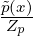

with
computationally intractable normalizers Zp1 and Zp2 is said projective (or two-sided homogeneous) if and
only if
with
computationally intractable normalizers Zp1 and Zp2 is said projective (or two-sided homogeneous) if and
only if
This is a working document which will be frequently updated with materials concerning the discrepancy between two distributions.
This document is also available in the PDF Distance.pdf
There are many other acronyms used in the literature for referencing a dissimilarity; For example, the following 5 D’s: Discrepancies, deviations, dissimilarities, divergences, and distances.
Consider a density p(x) =  where (x) is an unnormalized computable density and Zp = ∫
p(x)dμ(x)
the computationally intractable normalizer (also called in statistical physics the partition function or free
energy). A statistical distance D[p1 : p2] between two densities p1(x) = and p2(x) = with
computationally intractable normalizers Zp1 and Zp2 is said projective (or two-sided homogeneous) if and
only if
In particular, letting λ1 = Zp1 and λ2 = Zp2, we have
![D [p : p ] = D[˜p : ˜p ].
1 2 1 2](Distance5x.png)
Notice that the rhs. does not rely on the computationally intractable normalizers. These projective distances are useful in statistical inference based on minimum distance estimators [2] (see next Section).
Here are a few statistical projective distances:
![(∫ ) ( ) ( ∫ ) (∫ )
D γ[p : q] := log qα+1 - 1+ 1- log qαp + 1-log pα+1 , γ ≥ 0
ℝ α ℝ α ℝ](Distance6x.png)
When γ → 0, we have [6] Dγ[p : q] = DKL[p : q], the Kullback-Leibler divergence (KLD). For example, we can estimate the KLD between two densities of an exponential-polynomial family by Monte Carlo stochastic integration of the γ-divergence for a small value of γ [27].
The γ-divergences (projective, Bregman-type=Cross-entropy-entropy) and the density power divergence [1] (non-projective, Bregman-type divergence):
can be encapsulated into the family of Φ-power divergences [37] (functional density power divergence class):
where ϕ(ex) convex and strictly increasing, ϕ continuous and twice continously differentiable with finite second order derivatives. We have Dϕ,0[p : q] = ϕ′(1)∫ ℝp(x)log dμ(x) = ϕ′(1)DKL[p : q].
and Hölder divergences [35] (HD, projective, which generalizes the CSD):
We have
![H ¨older H ¨older
∀ λ1 > 0,λ2 > 0,D α,γ [λ1p : λ2q] = D α,γ [p : q],](Distance12x.png)
and
Hölder divergences between two densities pθp and pθq of an exponential family with cumulant function F(θ) is available in closed-form [35]:
The CSD is available in closed-form between mixtures of an exponential family with a conic natural parameter [18]: This includes the case of Gaussian mixture models [11].
![( pi)
Hilbert maxi-∈{1,...,d}-qi
D [p : q] = log minj ∈{1,...,d} pj .
qj](Distance15x.png)
We have
The Hilbert projective simplex distance can be extended to the cone of positive-definite matrices [34] (and its subspace of correlation matrices called the elliptope) as follows:
![( - 1)
DHilbert[P : Q ] = log λmax(P-Q-)- ,
λmin(PQ -1)](Distance17x.png)
where λmax(X) and λmin(X) denote the largest and smallest eigenvalue of matrix X, respectively.
When estimating the parameter  for a parametric family of distributions {pθ} from i.i.d. observations
for a parametric family of distributions {pθ} from i.i.d. observations
 = {x1,…,xn}, we can define a minimum distance estimator (MDE):
= {x1,…,xn}, we can define a minimum distance estimator (MDE):
![θˆ= argmin D [pS : pθ],
θ](Distance19x.png)
where p =
=  ∑
i=1nδxi is the empirical distribution (normalized). Thus we need only a right-sided
projective divergence to estimate models with computationally intractable normalizers. For example, the
Maximum Likelihood Estimator (MLE) is a MDE wrt. the KLD:
∑
i=1nδxi is the empirical distribution (normalized). Thus we need only a right-sided
projective divergence to estimate models with computationally intractable normalizers. For example, the
Maximum Likelihood Estimator (MLE) is a MDE wrt. the KLD:
![θˆMLE = argmin DKL [pS : pθ].
θ](Distance21x.png)
It is thus interesting to study the impact of the choice of the distance D to the properties of the corresponding estimator (e.g., γ-divergences yields provably robust estimators [6]).
The Hyvarinen divergence has been extended for order-α Hyvarinen divergences [22] (for α > 0):
Let ( ,
, ,μ) be a measure space, and (w1,P1),…,(wn,Pn) be n weighted probability measures dominated
by a measure μ (with wi > 0 and ∑
wi = 1). Denote by
,μ) be a measure space, and (w1,P1),…,(wn,Pn) be n weighted probability measures dominated
by a measure μ (with wi > 0 and ∑
wi = 1). Denote by  := {(w1,p1),…,(wn,pn)} the set of their
weighted Radon-Nikodym densities pi =
:= {(w1,p1),…,(wn,pn)} the set of their
weighted Radon-Nikodym densities pi =  with respect to μ.
with respect to μ.
A statistical divergence D[p : q] is a measure of dissimilarity between two densities p and q (i.e., a
2-point distance) such that D[p : q] ≥ 0 with equality if and only if p(x) = q(x) μ-almost everywhere. A
statistical diversity index D() is a measure of variation of the weighted densities in related to a
measure of centrality, i.e., a n-point distance which generalizes the notion of 2-point distance when
2(p,q) := {( ,p1),(
,p1),( ,p2)}:
,p2)}:
The fundamental measure of dissimilarity in information theory is the I-divergence (also called the Kullback-Leibler divergence, KLD, see Equation (2.5) page 5 of [12]):
The KLD is asymmetric (hence the delimiter notation “:” instead of ‘,’) but can be symmetrized by defining the Jeffreys J-divergence (Jeffreys divergence, denoted by I2 in Equation (1) in 1946’s paper [8]):
Although symmetric, any positive power of Jeffreys divergence fails to satisfy the triangle inequality: That is, DJα is never a metric distance for any α > 0, and furthermore DJα cannot be upper bounded.
In 1991, Lin proposed the asymmetric K-divergence (Equation (3.2) in [14]):
and defined the L-divergence by analogy to Jeffreys’s symmetrization of the KLD (Equation (3.4) in [14]):
By noticing that
where h denotes Shannon entropy (Equation (3.14) in [14]), Lin coined the (skewed) Jensen-Shannon divergence between two weighted densities (1 - α,p) and (α,q) for α ∈ (0,1) as follows (Equation (4.1) in [14]):
|
| (1) |
Finally, Lin defined the generalized Jensen-Shannon divergence (Equation (5.1) in [14]) for a finite weighted set of densities:
This generalized Jensen-Shannon divergence is nowadays called the Jensen-Shannon diversity index.
To contrast with the Jeffreys’ divergence, the Jensen-Shannon divergence (JSD) DJS := DJS, is upper
bounded by log 2 (does not require the densities to have the same support), and is a metric
distance [4, 5]. Lin cited precursor work [42, 15] yielding definition of the Jensen-Shannon divergence:
The Jensen-Shannon divergence of Eq. 1 is the so-called “increments of entropy” defined in (19) and (20)
of [42].
is upper
bounded by log 2 (does not require the densities to have the same support), and is a metric
distance [4, 5]. Lin cited precursor work [42, 15] yielding definition of the Jensen-Shannon divergence:
The Jensen-Shannon divergence of Eq. 1 is the so-called “increments of entropy” defined in (19) and (20)
of [42].
The Jensen-Shannon diversity index was also obtained very differently by Sibson in 1969 when he
defined the information radius [40] of order α using Rényi α-means and Rényi α-entropies [38]. In
particular, the information radius IR1 of order 1 of a weighted set of densities is a diversity index
obtained by solving the following variational optimization problem:
|
| (2) |
Sibson solved a more general optimization problem, and obtained the following expression (term K1 in Corollary 2.3 [40]):
Thus Eq. 2 is a variational definition of the Jensen-Shannon divergence.
The K-divergence of Lin can be skewed with a scalar parameter α ∈ (0,1) to give
![DK, α[p : q] := DKL [p : (1- α )p+ αq].](Distance39x.png) | (3) |
Skewing parameter α was first studied in [13] (2001, see Table 2 of [13]). We proposed to unify the Jeffreys divergence with the Jensen-Shannon divergence as follows (Equation 19 in [17]):
|
| (4) |
When α = , we have DK, J = DJS, and when α = 1, we get DK,1J =
J = DJS, and when α = 1, we get DK,1J =  DJ.
DJ.
Notice that
amounts to calculate
![h×[(1- β )p + βq : (1- α )p+ αq ]- ((1 - β)h[p]+ βh[q])](Distance45x.png)
where
denotes the cross-entropy. By choosing α = β, we have h×[(1-β)p+βq : (1-α)p+αq] = h[(1-α)p+αq], and thus recover the skewed Jensen-Shannon divergence of Eq. 1.
In [21] (2020), we considered a positive skewing vector α ∈ [0,1]k and a unit positive weight w belonging to the standard simplex Δk, and defined the following vector-skewed Jensen-Shannon divergence:
Unfortunately, the JSD between two Gaussian densities is not known in closed form because of the definite integral of a log-sum term (i.e., K-divergence between a density and a mixture density ). For the special case of the Cauchy family, a closed-form formula [29] for the JSD between two Cauchy densities was obtained. Thus we may choose a geometric mixture distribution [19] instead of the ordinary arithmetic mixture . More generally, we can choose any weighted mean Mα (say, the geometric mean, or the harmonic mean, or any other power mean) and define a generalization of the K-divergence of Equation 3:
|
| (7) |
where
is a statistical M-mixture with ZMα(p,q) denoting the normalizing coefficient:
so that ∫ (pq)Mα(x)dμ(x) = 1. These M-mixtures are well-defined provided the convergence of the definite integrals.
Then we define a generalization of the JSD [19] termed (Mα,Nβ)-Jensen-Shannon divergence as follows:
|
| (8) |
where Nβ is yet another weighted mean to average the two Mα-K-divergences. We have DJS = DJSA,A where A(a,b) = is the arithmetic mean. The geometric JSD yields a closed-form formula between two multivariate Gaussians, and has been used in deep learning [3]. More generally, we may consider the Jensen-Shannon symmetrization of an arbitrary distance D as
![DJMS ,N [p : q] := N β (D [p : (pq)Mα],D [q : (pq)Mα]).
α β](Distance55x.png) | (9) |
|
| (10) |
When Sw = Aw (with Aw(a1,…,an) = ∑ i=1nwiai the arithmetic weighted mean), we recover the ordinary Jensen-Shannon diversity index. More generally, we define the S-Jensen-Shannon index of an arbitrary distance D as
|
| (11) |
When n = 2, this yields a Jensen-Shannon-symmetrization of distance D.
The variational optimization defining the JSD can also be constrained to a (parametric) family of
densities  , thus defining the (S,)-relative Jensen-Shannon diversity index:
, thus defining the (S,)-relative Jensen-Shannon diversity index:
|
| (12) |
The relative Jensen-Shannon divergences are useful for clustering applications: Let pθ1 and pθ2 be
two densities of an exponential family with cumulant function F(θ). Then the -relative
Jensen-Shannon divergence is the Bregman information of 2(p,q) for the conjugate function
F*(η) = -h[pθ] (with η = ∇F(θ)). The -relative JSD amounts to a Jensen divergence for
F*:
![DvJS [p ,p ] = min 1-{DKL [p : p ]+ DKL [p : p ]}, (13)
θ1 θ2 θ 2 θ1 θ θ2 θ
1-
= miθn 2 {BF [θ : θ1]+ BF [θ : θ2]}, (14)
1
= miηn 2-{BF *[η1 : η]+ BF *[η2 : η]}, (15)
* *
= F--(η1)+-F--(η2) - F*(η*), (16)
2
=: JF *(η1,η2), (17)](Distance59x.png)
Pearson [36] first considered a unimodal Gaussian mixture of two components for modeling distributions crabs in 1894. Statistical mixtures [16] like the Gaussian mixture models (GMMs) are often met in information sciences, and therefore it is important to assess their dissimilarities. Let m(x) = ∑ i=1kwipi(x) and m′(x) = ∑ i=1k′wi′pi′(x) be two finite statistical mixtures. The KLD between two GMMs m and m′ is not analytic [41] because of the log-sum terms:
However, the KLD between two GMMs with the same prescribed components pi(x) = pi′(x) = pμi,Σi(x) (i.e., k = k′, and only the normalized positive weights may differ) is provably a Bregman divergence [28] for the differential negentropy F(θ):
where m(θ) = ∑ i=1k-1wipi(x) + (1 -∑ i=1k-1wi)pk(x) and F(θ) = ∫ m(θ)log m(θ)dx. The family {mθ θ ∈ Δk-1∘} is called a mixture family in information geometry, where Δk-1∘ denotes the (k - 1)-dimensional open standard simplex. However, F(θ) is usually not available in closed-form because of the log-sum integral. In some special cases like the mixture of two prescribed Cauchy distributions, we get a closed-form formula for the KLD, JSD, etc. [30, 25]. Thus when dealing with mixtures (like GMMs), we either need efficient approximating (§4.1), bounding (§4.2) KLD techniques, or new distances (§4.3) that yields closed-form formula between mixture densities.
where s = {x1,…,xs} are s IID samples from the mid mixture m12(x) :=  (m(x) + m′(x))
(with lims→∞Js[m,m′] = DJ[m,m′]). In [23], the mixtures m and m′ are converted into
densities of an exponential-polynomial family. The JD between densities pθ and pθ′ of an
exponential family with cumulant function F is available in closed-form:
(m(x) + m′(x))
(with lims→∞Js[m,m′] = DJ[m,m′]). In [23], the mixtures m and m′ are converted into
densities of an exponential-polynomial family. The JD between densities pθ and pθ′ of an
exponential family with cumulant function F is available in closed-form:
with η = ∇F(θ) and θ = ∇F*(η), where F* denotes the convex conjugate. Any smooth density r (includes a mixture r = m) is converted into close densities pθrMLE and pηrSME of a exponential-polynomial family using extensions of the Maximum Likelihood Estimator (MLE) and Score Matching Estimator (SME). Then JD between mixtures is approximated as follows
for α ≥ 1, where F denotes the set of all real-valued measurable functions defined on the support .
Minkowski’s inequality writes as ∥p + q∥α ≤∥p∥α + ∥q∥α for α ∈ [1,∞). The statistical Minkowski
difference distance between p,q ∈ Lα(μ) is defined as
|
| (18) |
The statistical Minkowski log-ratio distance is defined by:
|
| (19) |
These statistical Minkowski distances are symmetric, and Lα[p,q] is scale-invariant. For even integers α ≥ 2, DαMinkowski[m : m′] is available in closed-form.
Initially created 13th August 2021 (last updated August 16, 2021).
[1] Ayanendranath Basu, Ian R Harris, Nils L Hjort, and MC Jones. Robust and efficient estimation by minimising a density power divergence. Biometrika, 85(3):549–559, 1998.
[2] Ayanendranath Basu, Hiroyuki Shioya, and Chanseok Park. Statistical inference: the minimum distance approach. Chapman and Hall/CRC, 2019.
[3] Jacob Deasy, Nikola Simidjievski, and Pietro Liò. Constraining Variational Inference with Geometric Jensen-Shannon Divergence. In Advances in Neural Information Processing Systems, 2020.
[4] Dominik Maria Endres and Johannes E Schindelin. A new metric for probability distributions. IEEE Transactions on Information theory, 49(7):1858–1860, 2003.
[5] Bent Fuglede and Flemming Topsoe. Jensen-Shannon divergence and Hilbert space embedding. In International Symposium onInformation Theory, 2004. ISIT 2004. Proceedings., page 31. IEEE, 2004.
[6] Hironori Fujisawa and Shinto Eguchi. Robust parameter estimation with a small bias against heavy contamination. Journal of Multivariate Analysis, 99(9):2053–2081, 2008.
[7] Aapo Hyvärinen and Peter Dayan. Estimation of non-normalized statistical models by score matching. Journal of Machine Learning Research, 6(4), 2005.
[8] Harold Jeffreys. An invariant form for the prior probability in estimation problems. Proceedings of the Royal Society of London. Series A. Mathematical and Physical Sciences, 186(1007):453–461, 1946.
[9] Robert Jenssen, Jose C Principe, Deniz Erdogmus, and Torbjørn Eltoft. The Cauchy–Schwarz divergence and Parzen windowing: Connections to graph theory and Mercer kernels. Journal of the Franklin Institute, 343(6):614–629, 2006.
[10] MC Jones, Nils Lid Hjort, Ian R Harris, and Ayanendranath Basu. A comparison of related density-based minimum divergence estimators. Biometrika, 88(3):865–873, 2001.
[11] Kittipat Kampa, Erion Hasanbelliu, and Jose C Principe. Closed-form Cauchy-Schwarz PDF divergence for mixture of Gaussians. In The 2011 International Joint Conference on Neural Networks, pages 2578–2585. IEEE, 2011.
[12] Solomon Kullback. Information theory and statistics. Courier Corporation, 1997.
[13] Lillian Lee. On the effectiveness of the skew divergence for statistical language analysis. In Artificial Intelligence and Statistics (AISTATS), page 65?72, 2001.
[14] Jianhua Lin. Divergence measures based on the Shannon entropy. IEEE Transactions on Information theory, 37(1):145–151, 1991.
[15] Jianhua Lin and SKM Wong. Approximation of discrete probability distributions based on a new divergence measure. Congressus Numerantium (Winnipeg), 61:75–80, 1988.
[16] Geoffrey J McLachlan and Kaye E Basford. Mixture models: Inference and applications to clustering, volume 38. M. Dekker New York, 1988.
[17] Frank Nielsen. A family of statistical symmetric divergences based on Jensen’s inequality. arXiv preprint arXiv:1009.4004, 2010.
[18] Frank Nielsen. Closed-form information-theoretic divergences for statistical mixtures. In Proceedings of the 21st International Conference on Pattern Recognition (ICPR), pages 1723–1726. IEEE, 2012.
[19] Frank Nielsen. On the Jensen?Shannon Symmetrization of Distances Relying on Abstract Means. Entropy, 21(5), 2019.
[20] Frank Nielsen. The statistical Minkowski distances: Closed-form formula for Gaussian mixture models. In International Conference on Geometric Science of Information, pages 359–367. Springer, 2019.
[21] Frank Nielsen. On a Generalization of the Jensen?Shannon Divergence and the Jensen?Shannon Centroid. Entropy, 22(2), 2020.
[22] Frank Nielsen. Fast approximations of the Jeffreys divergence between univariate Gaussian mixture models via exponential polynomial densities. arXiv preprint arXiv:2107.05901, 2021.
[23] Frank Nielsen. Fast approximations of the jeffreys divergence between univariate gaussian mixture models via exponential polynomial densities. arXiv preprint arXiv:2107.05901, 2021.
[24] Frank Nielsen. On a Variational Definition for the Jensen-Shannon Symmetrization of Distances Based on the Information Radius. Entropy, 23(4), 2021.
[25] Frank Nielsen. The dually flat information geometry of the mixture family of two prescribed Cauchy components. arXiv preprint arXiv:2104.13801, 2021.
[26] Frank Nielsen and Richard Nock. Sided and symmetrized Bregman centroids. IEEE transactions on Information Theory, 55(6):2882–2904, 2009.
[27] Frank Nielsen and Richard Nock. Patch matching with polynomial exponential families and projective divergences. In International Conference on Similarity Search and Applications, pages 109–116. Springer, 2016.
[28] Frank Nielsen and Richard Nock. On the geometry of mixtures of prescribed distributions. In IEEE International Conference on Acoustics, Speech and Signal Processing (ICASSP), pages 2861–2865. IEEE, 2018.
[29] Frank Nielsen and Kazuki Okamura. On f-divergences between cauchy distributions. arXiv:2101.12459, 2021.
[30] Frank Nielsen and Kazuki Okamura. On f-divergences between Cauchy distributions. arXiv preprint arXiv:2101.12459, 2021.
[31] Frank Nielsen and Ke Sun. Guaranteed bounds on information-theoretic measures of univariate mixtures using piecewise log-sum-exp inequalities. Entropy, 18(12):442, 2016.
[32] Frank Nielsen and Ke Sun. Combinatorial bounds on the α-divergence of univariate mixture models. In 2017 IEEE International Conference on Acoustics, Speech and Signal Processing, ICASSP 2017, New Orleans, LA, USA, March 5-9, 2017, pages 4476–4480. IEEE, 2017.
[33] Frank Nielsen and Ke Sun. Guaranteed Deterministic Bounds on the total variation distance between univariate mixtures. In 28th IEEE International Workshop on Machine Learning for Signal Processing, MLSP 2018, Aalborg, Denmark, September 17-20, 2018, pages 1–6. IEEE, 2018.
[34] Frank Nielsen and Ke Sun. Clustering in Hilbert’s projective geometry: The case studies of the probability simplex and the elliptope of correlation matrices. In Geometric Structures of Information, pages 297–331. Springer, 2019.
[35] Frank Nielsen, Ke Sun, and Stéphane Marchand-Maillet. On Hölder projective divergences. Entropy, 19(3):122, 2017.
[36] Karl Pearson. Contributions to the mathematical theory of evolution. Philosophical Transactions of the Royal Society of London. A, 185:71–110, 1894.
[37] Souvik Ray, Subrata Pal, Sumit Kumar Kar, and Ayanendranath Basu. Characterizing the functional density power divergence class. arXiv preprint arXiv:2105.06094, 2021.
[38] Alfréd Rényi et al. On measures of entropy and information. In Proceedings of the Fourth Berkeley Symposium on Mathematical Statistics and Probability, Volume 1: Contributions to the Theory of Statistics. The Regents of the University of California, 1961.
[39] Olivier Schwander, Stéphane Marchand-Maillet, and Frank Nielsen. Comix: Joint estimation and lightspeed comparison of mixture models. In 2016 IEEE International Conference on Acoustics, Speech and Signal Processing, ICASSP 2016, Shanghai, China, March 20-25, 2016, pages 2449–2453. IEEE, 2016.
[40] Robin Sibson. Information radius. Zeitschrift für Wahrscheinlichkeitstheorie und verwandte Gebiete, 14(2):149–160, 1969.
[41] Sumio Watanabe, Keisuke Yamazaki, and Miki Aoyagi. Kullback information of normal mixture is not an analytic function. IEICE technical report. Neurocomputing, 104(225):41–46, 2004.
[42] Andrew KC Wong and Manlai You. Entropy and distance of random graphs with application to structural pattern recognition. IEEE Transactions on Pattern Analysis and Machine Intelligence, (5):599–609, 1985.